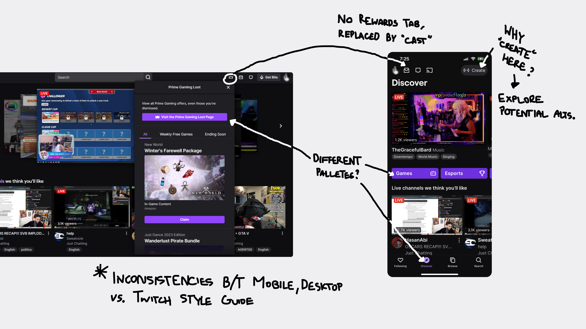
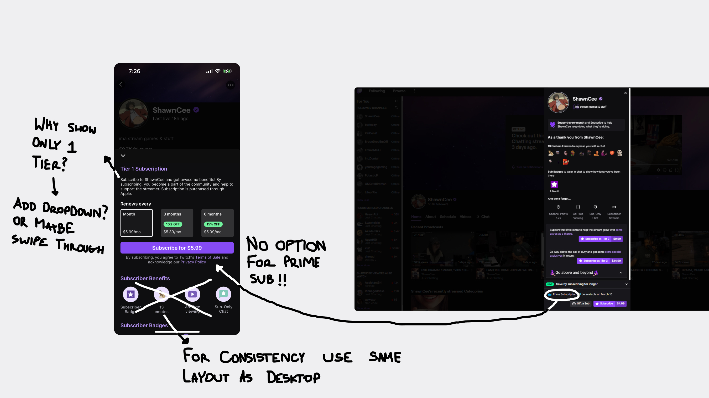
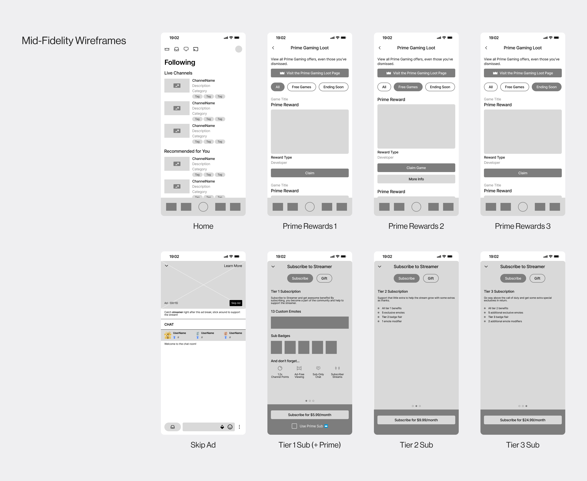
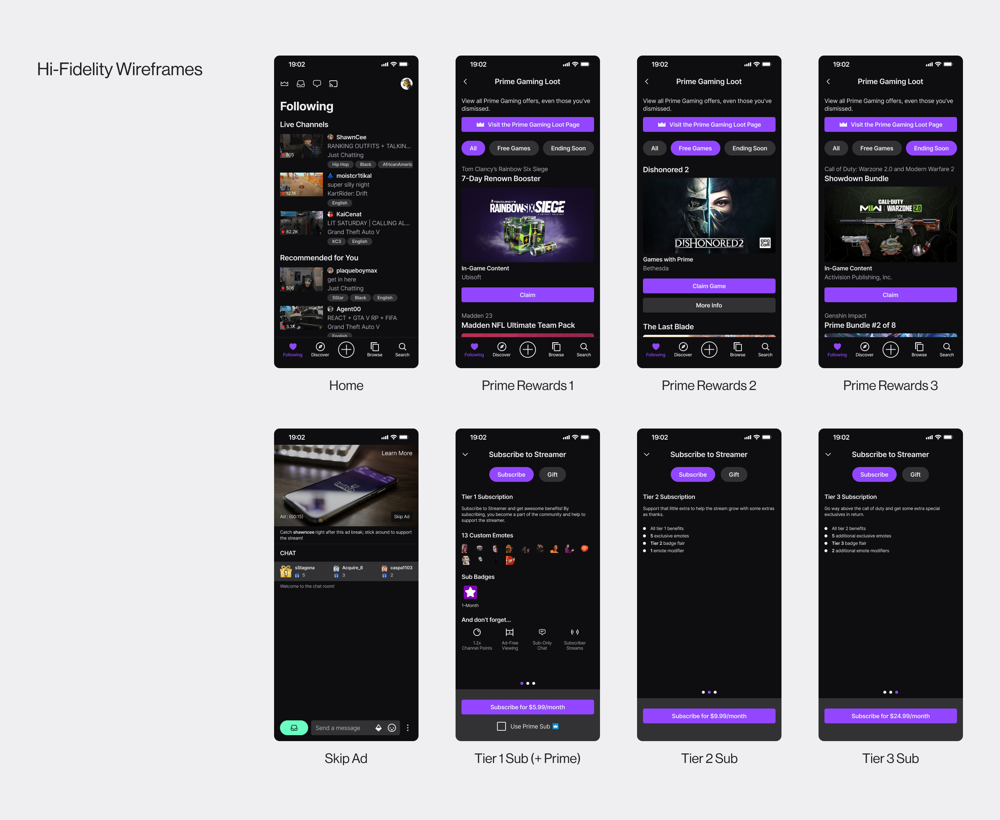

Twitch (in collaboration with Amazon) offers a subscription service titled “Prime” for users who wish to enhance both their streaming and gaming experiences. The service currently provides its members with various benefits as is, key features being free exclusive content for a large library of games, free games, and a free monthly subscription to any streamer. However, these features are only accessible through their website, keeping the experience from mobile users. With this in mind, I explored ways to integrate the Prime service to Twitch’s mobile app and conceptualized a new feature that would further incentivize more Prime subscriptions going forward.
Problem
The absence of Prime’s features on mobile creates a gap between users who prefer the mobile app versus those who use Twitch’s website. How can the mobile experience be updated to match its web counterpart?


Research
With Prime’s features currently exclusive to desktop devices, I gathered secondary research to look into how Twitch fared with its current systems in place.
A quarter of active users are on Prime subscriptions
23% of Twitch's monthly active users and 27% of its daily active users are Prime members
Lacking mobile presence
35% of Twitch viewership comes from mobile devices (versus 70% on YouTube Live)
A future in favor of Twitch, not the user
Twitch intends to make revenue split changes in favor of their profits (enticing streamers to run more ads)
After identifying the key pain points, I started ideating how and where these new features would blend within the current mobile experience. I wanted these changes to be natural but noticeable for users, so I developed low-fi sketches for general structure, then began committing to the designs that worked within the scope I set.


Reflection
Being that this was my first ever UX project I am proud of the output I was able to create independently. However, even with what I’ve produced here, I do understand there is room for me to grow from this. One key idea I learned during this project specifically was the value of iteration. Referring back to the problem and pain points (constantly) helped guide me to creating and iterating solutions with intention rather than impulse.
One thing I’d like to expand upon is gathering primary research and feedback from the user. My insights and design decisions were derived from secondary research throughout this project. With direct feedback from target users through processes such as usability testing, I would be able to properly gauge the success (or failure) of the designs/ prototypes developed.